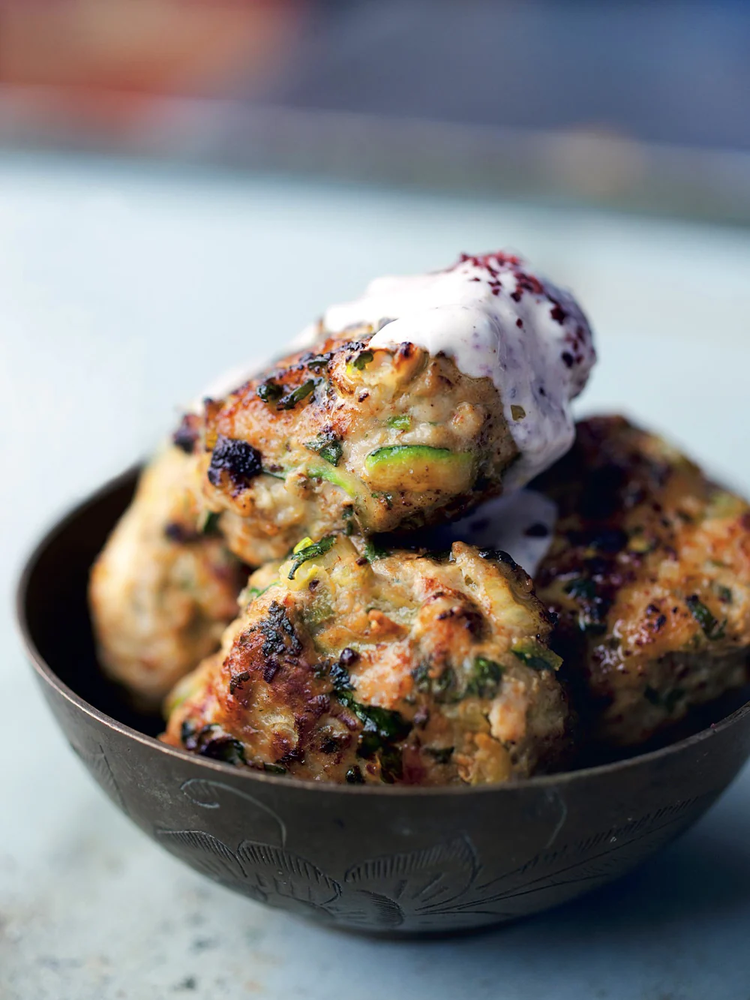

Turkey Burgers

Description
The creamy sumac sauce served with these burgers is fantastically sharp and will go well with most non-red meats (chicken sofrito, for example) and also with grilled vegetables and fritters. You can make it in advance, or double the quantity, and keep it refrigerated. After a day the flavours will mellow so you may want to reinvigorate it by adding extra sumac and lemon juice. The burgers are very portable. You can have them as a snack from the fridge and they are also ideal for taking over to friends or in a lunchbox for work.
Ingredients
- 500 mg minced turkey
- 1 large courgette, coarsely grated (about 200g in total)
- 40g spring onions, thinly sliced
- 1 medium free-range egg
- 2 tbsp chopped mint
- 2 tbsp chopped coriander
- 2 garlic cloves, crushed
- 1 tsp ground cumin
Steps
- First make the soured cream sauce by placing all the ingredients in a small bowl. Stir well and set aside or chill until needed.
- Preheat the oven to 220ºC/200ºC Fan/Gas Mark 7. In a large bowl mix together all the ingredients for the meatballs, bar the sunflower oil. Once evenly mixed, shape into burgers, about 45g each, making about 18.
- Pour enough sunflower oil into a large frying pan so you get a thin layer at the bottom, about 2mm thick. Heat up well and sear the meatballs in batches on medium heat from all sides. Cook them for about 4 minutes, adding oil as needed, until golden brown.
- Carefully transfer the seared meatballs into an oven tray lined with greaseproof paper and place in the oven 5-7 minutes, or until just cooked through. Serve warm or at room temperature, with the sauce on the side.
Home